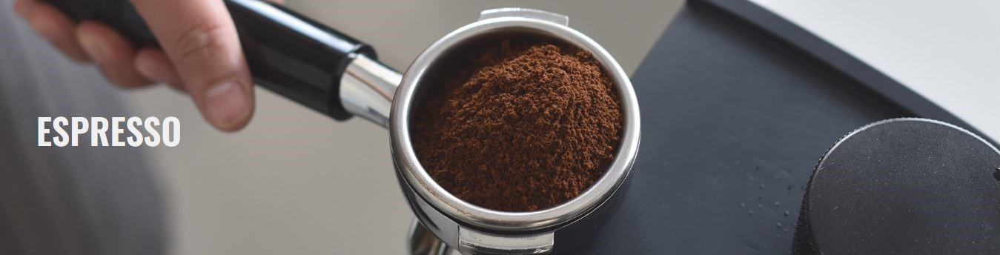
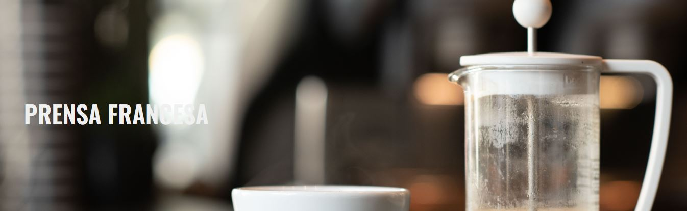

PRODUCTOS DESTACADOS

TUTORIALES

Paso a paso
1. Comienza calentando tu máquina de espresso y tu taza para asegurar una temperatura adecuada
2. Mide 18-20 gramos de café fresco y molido fino para un solo espresso o el doble de esta cantidad para un doble
3. Carga el café molido en el portafiltro y úsalo para nivelar con un movimiento circular. Presiona firmemente con un tamper para compactar el café.
4. Coloca el portafiltro en la máquina y comienza la extracción. El tiempo de extracción ideal es entre 25 y 30 segundos para obtener un espresso equilibrado.
5. Disfruta de tu espresso solo o úsalo como base para otras deliciosas bebidas.

Paso a paso
1. Calentar agua: Hierve suficiente agua y déjala reposar durante unos segundos para que alcance la temperatura adecuada, entre 175°F - 200°F o 80°C - 93°C.
2. Preparar el Aeropress: Coloca un filtro de papel en el porta filtro del Aeropress. Asegúrate de encajarlo bien.
3. Moler el café: Muele el café recién tostado en una molienda fina, similar a la del espresso. Deberías necesitar alrededor de 15-20 gramos de café para una taza de café estándar.
4. Preparar el café: Pon el Aeropress boca abajo (el émbolo mirando hacia arriba) sobre una superficie estable.
5. Añadir café molido: Agrega el café molido al cilindro del Aeropress.
6. Agregar agua: Vierte el agua caliente sobre el café molido, asegurándote de cubrirlo completamente. Utiliza aproximadamente 220 ml de agua para 15-20 gramos de café.
7. Mezclar y esperar: Usa la espátula o cuchara para mezclar el café y el agua durante unos 10 segundos. Luego, deja reposar durante otros 20-30 segundos para que el café se infusione.
8. Colocar el filtro y la tapa: Coloca el filtro de papel en el porta filtro y enrosca el porta filtro en la parte superior del cilindro. Asegúrate de que esté bien ajustado.
9. Invertir y presionar: Gira el Aeropress rápidamente y colócalo sobre la taza. Presiona lentamente el émbolo hacia abajo con una presión constante hasta que escuches un siseo. Esto debería tomar alrededor de 20-30 segundos.

Paso a paso
1. Calentar agua: Hierve suficiente agua y déjala reposar durante unos segundos para que alcance la temperatura adecuada, entre 195°F - 205°F o 90°C - 96°C.
2. Moler el café: Muele el café recién tostado en una molienda gruesa y uniforme. Necesitarás aproximadamente 30 gramos de café por cada 500 ml de agua.
3. Preparar la prensa francesa: Retira el émbolo de la prensa francesa y coloca el café molido en la jarra.
4. Añadir agua: Vierte el agua caliente sobre el café molido en la jarra. Asegúrate de cubrir todo el café. Utiliza aproximadamente 30 gramos de café por cada 500 ml de agua.
5. Mezclar: Usa una espátula o cuchara para mezclar el café y el agua, asegurándote de que todos los posos de café estén saturados.
6. Dejar reposar: Coloca la tapa de la prensa francesa en la parte superior, pero no presiones el émbolo todavía. Deja reposar la mezcla de café y agua durante aproximadamente 4 minutos. Puedes ajustar este tiempo según tu preferencia de fuerza de café.
7. Presionar: Después de que el café haya reposado, lentamente presiona el émbolo hacia abajo con una presión constante. Asegúrate de hacerlo suavemente para evitar que los posos de café pasen al café final.
8. Servir: Vierte el café preparado en una taza resistente al calor y disfruta de tu café recién hecho.

Paso a paso
1. Preparar el café molido: Muele el café en un molido medio-fino. Debe ser un poco más grueso que el espresso, pero más fino que el café de filtro.
2. Llenar la cafetera Moka con agua: Llena la base de la cafetera Moka con agua fría. Llena hasta justo debajo de la válvula de seguridad. Evita que el agua sobrepase este nivel.
3. Añadir café molido: Coloca el filtro dentro del embudo de la cafetera Moka y llénalo con café molido. No lo aprietes demasiado, simplemente llénalo y nivélalo con los dedos.
4. Armar la cafetera Moka: Enrosca la parte superior de la cafetera Moka en la base, asegurándote de que esté bien sellada.
5. Colocar la cafetera en la estufa: Coloca la cafetera Moka en la estufa a fuego medio-bajo. Asegúrate de que el mango esté alejado del calor para evitar que se caliente demasiado.
6. Observar y esperar: Permanece atento mientras el agua en la base se calienta. Verás que el café comienza a subir por el tubo hacia la parte superior de la cafetera.
7. Retirar del fuego: Una vez que el café haya subido por completo a la parte superior de la cafetera, retírala del fuego. Esto evitará que el café se queme.
8. Servir y disfrutar: Vierte el café moka en una taza resistente al calor y disfruta de su sabor y aroma. Puedes endulzarlo o agregar leche según tu preferencia.